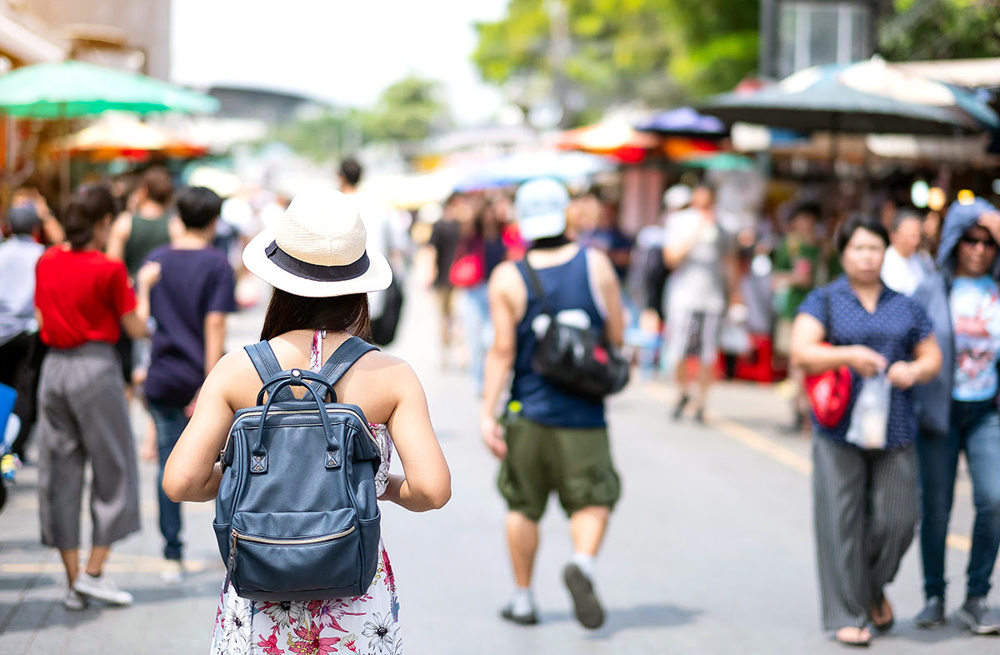

7 ตลาดนัดจตุจักร
ตลาดนัดจตุจักร ครอบคลุมพื้นที่ 88.5 ไร่ และเป็นตลาดที่ใหญ่ที่สุดในประเทศไทย และก็อาจจะเป็นตลาดนัดช่วงวันหยุดสุดสัปดาห์ที่ใหญ่ที่สุดในโลกเลยก็ว่าได้ ทุกๆ สุดสัปดาห์ มีคนมาเยือนตลาดนัดนี้ถึง 200,000 คน เพื่อช้อปปิ้งตามร้านต่างๆ ที่มีอยู่ถึง 15,000 ร้าน ตลาดแบ่งออกเป็น 27 โครงการ แบ่งเป็นโซนอาหาร งานศิลปะ ของเก่า และแฟชั่น เป็นต้น หากไม่เคยไปมาก่อน หาคู่มือเดินตลาดไว้ก็ดี จะได้มึนงงกับความใหญ่โตอลังการของ ตลาดนัดจตุจักร และถ้าจะให้ดี ควรวางแผนการเดิน ตลาดนัดจตุจักร ล่วงหน้า เพื่อจะได้เก็บครบทุกจุดตามที่ตั้งใจไว้